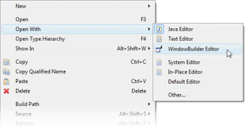

The following are frequently asked questions about Swing Designer:
-
Can Swing Designer edit windows created with JBuilder, VA Java, NetBeans, VisualCafe, etc.?
-
Can Swing Designer edit windows that have been created by hand?
-
Can I refactor or otherwise modify the Swing Designer generated code?
-
Why doesn’t Swing Designer surround generate code with special tags or mark it as read-only?
-
Are there any specific constructs that Swing Designer can’t parse?
-
What can I do if I don’t see the Design tab when I edit a window?
-
What should I do if I encounter an exception using Swing Designer?
-
What should I do if I encounter "Unknown Window Type (Parsing Error)"?
-
What should I do if I encounter an OutOfMemoryError using Swing Designer?
-
What should I do if I encounter an NoSuchMethodError or NoClassDefFoundError using Swing Designer?
-
What should I do if I encounter an UnsupportedClassVersionError using Swing Designer?
-
What should I do if I encounter an InstantiationException or other error when using a custom widget?
-
What should I do if I have problems running under SuSE Linux?
-
How can I prevent the preview window from flashing under Linux using Metacity
Can Swing Designer edit windows created with JBuilder, VA Java, NetBeans, VisualCafe, etc.?
Yes. Most GUI builders in the world will only read and write the code that they themselves create. Swing Designer is an exception to that rule. It can read and edit not only the code it creates, but also a great deal of code generated by other GUI builders (>95%). We have had very good success with code generated by JBuilder, NetBeans, Visual Cafe, VA Java, the Eclipse VE, etc. If you come across a case that does not work, send it to us for analysis. The more broken examples that we can "fix", the better Swing Designer will get in the long run (and the better chance you will have of salvaging your old code as-is). Note that Swing Designer will edit any existing code in place without changing its formatting. Any new widgets will be created using Swing Designer’s own code generation preferences.
Can Swing Designer edit windows that have been created by hand?
Yes. Most GUI builders in the world will only read and write the code that they themselves create. Swing Designer is an exception to that rule. It can read and write not only the code it creates, but also a great deal of code written by hand(>90%). If you come across a case that does not work, send it to us for analysis. The more broken examples that we can "fix", the better Swing Designer will get in the long run (and the better chance you will have of salvaging your old code as-is).
Note that dynamic GUI code can not be rendered or edited. The problem with dynamic code is that it generally relies on runtime calculations that have no meaning at runtime. Widgets created in a loop (where the loop parameters are passed in externally) are a good example. Widgets created in conditionals where the value of the conditional is not known until runtime are another example. Dynamic GUI code constructed from the results of complex database queries is yet another example.
Can I refactor or otherwise modify the Swing Designer generated code?
Yes. The Swing Designer parser has a good understanding of basic Java code and various Swing, SWT and other UI toolkit patterns. As a result, it is very refactoring friendly and very resilient in the face of hand made changes. You can make changes or add code anywhere you like and Swing Designer will reverse engineer it when possible. You can also refactor the code in almost any conceivable way and Swing Designer will still be able to parse it and render it in the design view. For example, use the tool to create a new Swing JFrame, add some widgets, and then use the Eclipse refactoring tools to extract some of the widgets into their own methods.
Why doesn’t Swing Designer surround generate code with special tags or mark it as read-only?
Using special tags or marking code read-only would go against several of Swing Designer’s major design goals. Swing Designer does not make any distinction between generated code and user-written code. Swing Designer is designed to generated the same code that you would write by hand and to make minimal changes to the source when you make a change to the design view. Swing Designer never regenerates the entire source for a file. If you change a single property, it will change only a single line of code. That line of code could theoretically be anywhere in the source file (including within lines originally created by Swing Designer or within lines that you wrote by hand).
Are there any specific constructs that Swing Designer can’t parse?
Yes. Here are some examples of constructs that Swing Designer does not yet handle:
-
Re-use of GridBagConstraint objects across multiple widgets (we support reusing the same variable but not the same objects)
-
UI construction through the use of local parameterized helper methods
-
Multiple aliases (fields or local variables) referring to the same component
-
Multiple references to the same widget definition through multiple invocations of the same helper method
-
Dynamic GUI code based on runtime calculations
Can Swing Designer use custom widgets?
Yes., with a few restrictions.
For Swing, any public JComponent subclass that has a public, zero-argument constructor can be used (as required by the Java Bean spec). Custom properties are derived through reflection by looking for getter/setter pairs of known types. If a matching JavaBean class is defined and available, it will be used for any custom properties. Custom JPanel subclasses will show their subcomponents when placed in Swing Designer.
Note: the Java Bean conventions are important from a GUI builder point of view as they establish a common, expected, and, for the most part, self documenting API. If you create your own unique constructors, your are, in effect, creating your own personal API which makes it difficult for a GUI builder to reflectively interact with your components. Generating code to a custom constructor API requires knowledge of the API that generally is not provided by the component. That requires hard coding knowledge of the component into the GUI builder itself.
Note: A component may rely on some runtime behavior that is not possible at design time (such as accessing an application database or some other file). Runtime specific behavior should be isolated (and stubbed out as necessary) by wrappering the runtime specific code with a call to Beans.isDesignTime() which will answer true when the component is loaded within Swing Designer and false at runtime.
What can I do if I don’t see the Design tab when I edit a window?

Eclipse remembers the last editor type used with a file. If you don’t see the Design tab, that means that you are using the standard Eclipse Java Editor rather than the WindowBuilder Editor. Open the file with the WindowBuilder Editor and you will see both the Source and Design tabs. Note that Eclipse will only let you have a file open with one editor at a time, so you may need to close any existing editor before opening it with the WindowBuilder Editor.
What should I do if I encounter an exception using Swing Designer?
If a newer Swing Designer build is available than the one you are using, please download the newer build and try and reproduce the problem. If the problem has been reported in the past, there is a good chance that it has already been fixed. If the problem still exists, you should send your Eclipse ".log" file (found in your <workspace>/.metadata directory) as well as any relevant test cases to support. Including a test case that will help us reproduce the problem is very important. The faster we can reproduce the problem, the faster we can get you a fix. If we can’t reproduce a problem, there is little we can do to help you.
Ideally, the test case you send should be the same window you were editing when the problem occurred (along with any supporting files needed to compile it). If that is not possible (possibly because you aren’t allowed to send any code to a 3rd party), then you should try to create a new, standalone test case that illustrates the same problem. The best approach is to create a standalone test case by removing all of the code that isn’t relevant to the problem at hand (e.g., keep deleting code until the problem goes away and then restore that last code that was last deleted).
What should I do if I encounter "Unknown Window Type (Parsing Error)"?
As suggested by the message, this is error is caused by a parsing problem. It has nothing to do with licensing. Your Eclipse ".log" file (found in your <workspace>/.metadata directory) should provide a hint as to the cause of the parsing error. Send the log file as well as a test case to support (ideally the window you are trying to edit). Including a test case that will help us reproduce the problem is very important. The faster we can reproduce the problem, the faster we can get you a fix. If we can’t reproduce a problem, there is little we can do to help you.
Ideally, the test case you send should be the same window you were editing when the problem occurred (along with any supporting files needed to compile it). If that is not possible (possibly because you aren’t allowed to send any code to a 3rd party), then you should try to create a new, standalone test case that illustrates the same problem. The best approach is to create a standalone test case by removing all of the code that isn’t relevant to the problem at hand (e.g., keep deleting code until the problem goes away and then restore that last code that was last deleted).
Refreshing and rebuilding your project using the Project > Clean command can often help as can cleaning your Eclipse "configuration" directory.
What should I do if I encounter an OutOfMemoryError using Swing Designer?
Make sure that you have Eclipse configured to use enough memory. Begin by specifying the starting amount of memory (-vmargs -Xms###m) in your Eclipse startup command line (e.g., the target field within a Windows shortcut) or eclipse.ini file (in your Eclipse root directory). If this is not specified, Eclipse’s starting amount of memory is quite small (only 40 MB). You should also specify the maximum amount of memory that Eclipse can use (-vmargs -Xmx###m) and the maximum amount of perm space available (-vmargs -XX:MaxPermSize=###m).
We typically recommend something like this (these setting are independent of any of the startup settings that you might have in place):
-vmargs -XX:MaxPermSize=128m -Xms256m -Xmx512m
An OutOfMemoryError is usually a side effect of something else, so you should send your Eclipse ".log" file (found in your <workspace>/.metadata directory) as well as any relevant test cases to support.
You might try running Eclipse with the -debug command line option. You can then press Ctrl+Break in the console to look at the thread dump which may show where the system is locking up and where the memory is going. Send that thread dump to support.
What should I do if I encounter an NoSuchMethodError or NoClassDefFoundError using Swing Designer?
Start by checking your Eclipse ".log" file (found in your <workspace>/.metadata directory). If the error references one of your classes or methods, check that your classpath properly references the class you are trying to use. Also check that your class is properly compiled (no red X's) and that a .class file exists in your projects /bin directory. A mismatch between the JDK used to compile your code and the JVM used to run Eclipse can also manifest itself as a NoClassDefFoundError problem. For example, if you compile your code using JDK 1.5 or 1.6 and then run your Eclipse using a 1.4 or 1.5 JVM, you can have this problem. If the error refers to a custom widget, you should also check that your component does not trigger an exception during its initialization (which can manifest itself as a NoClassDefFoundError). Try refreshing and cleaning your project using the Project > Clean… or Project > Build Project commands. If that does not help, send a test case to support.
If the error references a base Eclipse method or class, this means that you have the wrong version of Swing Designer loaded for the version of Eclipse you are using. Swing Designer is trying to access a method or class that simply does not exist in your Eclipse distribution. Delete the Swing Designer feature and plugin directories and then download and install the correct version of Swing Designer for the version of Eclipse you are using.
What should I do if I encounter an UnsupportedClassVersionError using Swing Designer?
An UnsupportedClassVersionError is usually caused by attempting to run code compiled against a later JRE with an IDE using an earlier JRE. Typically, you will see this when trying to use a class (such as a custom widget) that has been compiled against JDK 1.6 within a version of Eclipse launched with JDK 1.5.
Two solutions are possible: you may either recompile the class using JDK 1.5, or you can tell Eclipse to run using JDK 1.6 by modifying its startup parameters as follows (use your path to JDK 1.6 on your system):
-vm C:\jdk1.6.0_21\bin\java.exe
What should I do if I encounter an UnsatisfiedLinkError when launching my SWT application?
As stated in the product docs and tutorial, the Eclipse SWT DLL (which can be found in the $ECLIPSE$\plugins\org.eclipse.swt.win32_x.x.x\os\win32\x86\ directory or in the org.eclipse.swt.win32.win32.x86_3.x.x.jar file) needs to be on your path. Placing it into your windows/system32 directory is the easiest thing to do.
For Linux, you need to locate the corresponding Eclipse SWT *.so files contained in the SWT GTK plugin.
What should I do if I encounter an InstantiationException or other error using a custom widget?
An InstantiationException means that Swing Designer could not create an instance of a particular class. The most common reason for this is that the component is not a valid custom widget. In order to be a valid Swing widget, a class must be a valid Java Bean and have a public, zero-argument constructor. SWT widgets must have a public two-argument constructor with parent and style bits as the two arguments. To fix the problem, add the missing constructor. Note: the Java Bean conventions (slightly modified for SWT) are important from a GUI builder point of view as they establish a common, expected, and, for the most part, self documenting API. If you create your own unique constructors, your are, in effect, creating your own personal API which makes it difficult for a GUI builder to reflectively interact with your components. Generating code to a custom constructor API requires knowledge of the API that generally is not provided by the component. That requires hard coding knowledge of the component into the GUI builder itself.
Another possible cause for this exception is some other failure in the initialization code of the component. A component may rely on some runtime behavior that is not possible at design time (such as accessing an application database or some other file). Runtime specific behavior should be isolated (and stubbed out as necessary) by wrappering the runtime specific code with a call to Beans.isDesignTime() which will answer true when the component is loaded within Swing Designer and false at runtime.
More detail about the use of custom widgets is available in this FAQ entry.
How should Swing Designer be configured to work on Linux?
To use Swing Designer in Linux, we recommend that you use an official
JDK from Sun, as using the GPL version of the java is not recommended.
Here are some setup instructions for using Sun’s java with Fedora Core
and Debian. Note that use of a non-Sun JDK can result in Eclipse locking
up.
Using Sun’s Java with Fedora Core:
-
Download and Unpack Sun’s JDK .bin format.
-
If you wish to use java on the command line or with other programs besides eclipse add the following to your /etc/profile
JAVA_HOME = <path_to_jdk>
PATH= $PATH:$JAVA_HOME/bin
Export JAVA_HOME PATH
-
Install Sun’s java as alternative
#/usr/sbin/alternatives -install /usr/bin/java java <path_to_jdk> 2
-
Switch to the new alternative
#/usr/sbin/alternatives -config java
Select option 2
-
Test
#/usr/sbin/alternatives -display java
You should see java pointing to the Sun JDK.
Using Sun’s Java with Debian:
-
Download Sun JDK in .bin format
-
fakeroot make-jpkg <jdk>.bin
This creates a .deb package.
-
sudo dpkg -i <jdk>.deb
-
Test
#java -version.
What should I do if I have problems running under SuSE Linux?
If you have a problem running Swing Designer on Linux SuSE 10.3 such as Eclipse crashing and/or working incorrectly, or your my log files contains something like "xcb_xlib.c:42: xcb_xlib_lock: Assertion `!c→xlib.lock'" and/or "/usr/lib/Eclipse: No such file or directory", please try to add the following into you profile:
LIBXCB_ALLOW_SLOPPY_LOCK=1
export LIBXCB_ALLOW_SLOPPY_LOCK.
How can I prevent the preview window from flashing under Linux using Metacity
In order to create the graphics that you see in the design view, Swing
Designer creates an off screen window containing the various widgets and
they takes a screen snapshot of them. This works very well under
Windows, OSX and some versions of Linux. Recent versions of the Metacity
window manager (more recent than 2.1.4), however, have been
modified/"fixed" to disallow windows to be opened off screen. This
forces the preview window to appear on screen leading to an annoying
flashing effect any time you make a change. The solution is to disable
the Metacity "fully_onscreen" constraint by patching the Metacity source
code and rebuilding and installing the patched version into your
system.
Here are the steps to follow:
-
Download the Metacity source code from ftp://ftp.gnome.org/pub/gnome/sources/metacity/
-
Unpack the source code tarball into any temporary directory.
-
Chdir into this directory (with the unpacked code).
-
Find window.c file and open it with your favourite texteditor.
-
Find a line with "window→require_fully_onscreen = TRUE;"
-
Replace it with "window→require_fully_onscreen = FALSE;"
-
Save the changes and close the editor.
-
Open a terminal and chdir into the directory with the source code (nice if you have already done this)
-
Run "./configure".
-
Run "make all".
-
Make sure that steps 9 & 10 completed without errors.
-
Become root (or execute the next command via "sudo" depending on the Linux you are running)
-
Run "make install" (or "sudo make install").
-
Save your work and close any application you are working with.
-
End your session (or press Ctrl-Alt-Delete to restart the x-server) and log in again.
-
You are done!